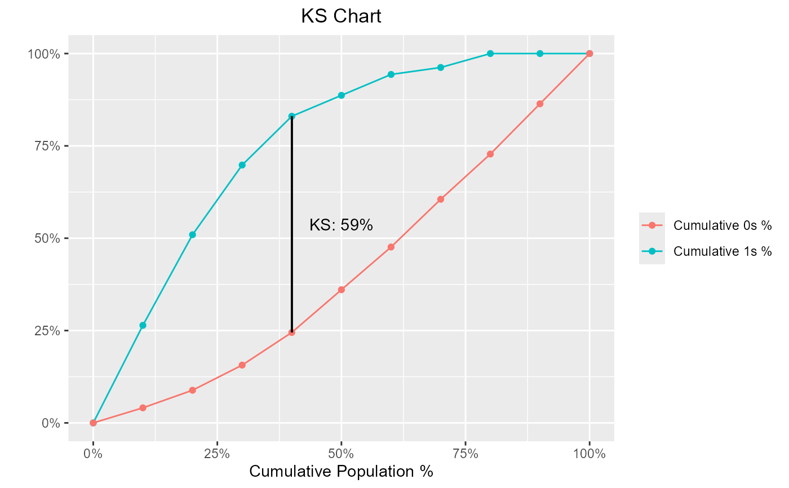

Kolmogorov-Smirnov (KS) statistics is used to assess predictive power for marketing or credit risk models. It is the maximum difference between cumulative event and non-event distribution across score/probability bands. The gains table typically has across score bands and can be used to find the KS for a model.
blr_ks_chart(gains_table, title = "KS Chart", yaxis_title = " ", xaxis_title = "Cumulative Population %", ks_line_color = "black")
| gains_table | An object of class |
|---|---|
| title | Plot title. |
| yaxis_title | Y axis title. |
| xaxis_title | X axis title. |
| ks_line_color | Color of the line indicating maximum KS statistic. |
https://doi.org/10.1198/tast.2009.08210
https://www.ncbi.nlm.nih.gov/pubmed/843576
Other model validation techniques: blr_confusion_matrix,
blr_decile_capture_rate,
blr_decile_lift_chart,
blr_gains_table,
blr_gini_index,
blr_lorenz_curve,
blr_roc_curve,
blr_test_hosmer_lemeshow
model <- glm(honcomp ~ female + read + science, data = hsb2, family = binomial(link = 'logit')) gt <- blr_gains_table(model) blr_ks_chart(gt)